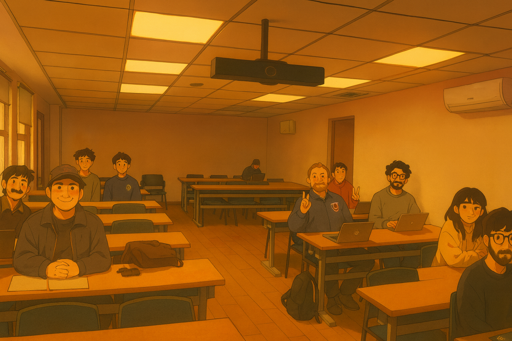

SOC3070 Análisis de Datos Categóricos
Este repositorio contiene el material del curso SOC3070 Análisis de Datos Categóricos, dictado el segundo semestre 2026 a estudiantes de postgrado del Departamento de Sociología de la Universidad Católica de Chile. Para mayores detalles ver el [programa] y [calendario] del curso.
Class of 2025

Nivelación Matemática
- Pre-calculo, cálculo y fundamento de probabilidad:
[Notebook][Code]
Calendario
Clases los días Lunes, bloques 12:20-13:30 (B1) y 14:50-16:00 (B2). Calendario ajustado al Calendario de Actividades Académicas y Estudiantiles UC 2026: inicio de clases 2do semestre miércoles 5 de agosto (primer lunes lectivo: 10 de agosto), receso de docencia semana del 14 de septiembre, feriado Encuentro de Dos Mundos el 12 de octubre, y finalización de clases el 27 de noviembre (último lunes lectivo: 23 de noviembre).
I. Teoría de la Probabilidad y Fundamentos del Curso
| Día | Mes | Bloque | Contenido | Material |
|---|---|---|---|---|
| 10 | Agosto | B1 | Presentación del curso | [Pres] [Code] |
| 10 | Agosto | B2 | Variables Aleatorias y Distribuciones Discretas | [Pres] [Code] |
| 17 | Agosto | B1 | Momentos | [Pres] [Code] |
| 17 | Agosto | B2 | Estimación y MLE | [Pres] [Code] |
Modelos para datos categóricos — uso explicativo
| Día | Mes | Bloque | Contenido | Material |
|---|---|---|---|---|
| 24 | Agosto | B1 | Modelo Lineal Estándar | [Pres] [Code] |
| 24 | Agosto | B2 | Modelo Lineal de Probabilidad | [Pres] [Code] |
| 31 | Agosto | B1 | Modelos Lineales Generalizados | [Pres] [Code] |
| 31 | Agosto | B2 | Regresión Logística — estructura teórica y estimación | [Pres] [Code] |
| 7 | Septiembre | B1 & B2 | Regresión Logística — interpretación de parámetros | [Pres] [Code] |
| 14 | Septiembre | — | NO HAY CLASES (Receso de docencia UC) | |
| 21 | Septiembre | B1 & B2 | Regresión Logística — inferencia estadística | [Pres] [Code] |
| 28 | Septiembre | B1 | Regresión Logística Multinomial — estructura teórica y estimación | [Pres] [Code] |
| 28 | Septiembre | B2 | Regresión Logística Multinomial — interpretación de parámetros | [Pres] [Code] |
| 5 | Octubre | B1 | Regresión Poisson — estructura teórica y estimación | [Pres] [Code] |
| 5 | Octubre | B2 | Regresión Poisson — interpretación de parámetros y extensiones | [Pres] [Code] |
| 12 | Octubre | — | NO HAY CLASES (Feriado: Encuentro de Dos Mundos) |
Bridge: causalidad, asociación y predicción
| Día | Mes | Bloque | Contenido | Material |
|---|---|---|---|---|
| 19 | Octubre | B1 | Causalidad y Asociación | [Pres] [Code] |
| 19 | Octubre | B2 | Predicción (trade-off sesgo-varianza, overfitting, cross-validation) | [Pres] [Code] |
Modelos para datos categóricos — uso predictivo
| Día | Mes | Bloque | Contenido | Material |
|---|---|---|---|---|
| 26 | Octubre | B1 | Clasificador Logístico Binomial | [Pres] [Code] |
| 26 | Octubre | B2 | Clasificador Logístico Multinomial | [Pres] [Code] |
| 2 | Noviembre | B1 & B2 | Regularización: Ridge & Lasso | [Pres] [Code] |
| 9 | Noviembre | B1 | Árboles de Regresión y Random Forests | [Pres] [Code] |
| 9 | Noviembre | B2 | Gradient Boosting | [Pres] [Code] |
| 16 | Noviembre | B1 | Introducción a Redes Neuronales | [Pres] [Code] |
| 16 | Noviembre | B2 | Un “Flavor” de LLMs (usando Regresión Logística) | [Pres] [Code] |
| 23 | Noviembre | — | Sesión de Posters (trabajo final) |
Recursos computacionales
- En el repositorio de mi curso de procesamiento avanzado de datos en
Rpuedes encontrar todo el material necesario para aprenderRdesde cero[aquí]. - Acá pueden encontrar un template para escribir en
Quarto([Template]y[.Rmd]).
IMPORTANTE: Este curso permite el uso ético y transparente de herramientas de inteligencia artificial generativa, únicamente como herramienta de estudio o apoyo en la escritura de código.